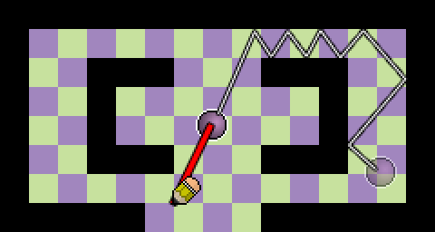
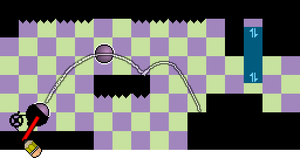

Tuleva Studio 1 -projektini tulee olemaan sivultapäin kuvattu taitopeli. Siinä tavoitteenasi on saada kerran liikkeelle laukaisemasi pallo paikasta A paikkaan B. Pallolle annetaan alkuvauhti ja -suunta vetämällä hiirellä pallon keskeltä kuminauha. Tämän kuminauhan pituutta ja kulmaa säätämällä hoituu koko pelin perusmekaniikka. Pelimekaniikan idea, kuten alla olevat kuvatkin, on saatu sivustolta jossa on listattu 300 eri pelimekaniikkaideaa. Tämän idean suora linkki on http://www.squidi.net/three/entry.php?id=24.

Ensimmäisessä tasossa pelissä ei ole mitään muuta kuin pallo, seiniä ja maali. Pelin edetessä vaikeustaso kasvaa, kun peliin tulee uusia elementtejä: painovoima, piikikkäitä esteitä, lepopaikkoja joista voidaan pallo uudelleen pistää liikkeelle, painovoimakenttiä jotka vaihtavat painovoiman suuntaa ja mitä kaikkea sitä keksiikään. Mikäli ajatus tuntuu hyvältä testausvaiheessa, peliin lisätään vielä jonkinlaisia asioita, joita keräämällä saa itselleen pisteitä ja nämä pisteet sitten kertovat kuinka taitava pelaaja on.

Tärkeimpänä ominaisuutena pelissä on luonnollisesti se, että pallon fysiikan mallinnus toimii oikein. Pallo ei saa mennä seinistä läpi ja painovoiman tulee olla realistisen tuntuinen. Mahdollisten erikoistapahtumien käsittely ja käyttäjälle tapauksesta kertominen visuaalisin palauttein on myös tärkeässä roolissa. Ohjelmassa tulee olemaan ainakin alkuvalikko, josta näkee läpäistyt tasot ja pystyy jatkamaan suoraan siitä, mihin viime kerralla jäi. Mahdolliset pisteet näkyvät myös sekä tasokohtaisesti että yhteenlaskettuna tasovalikossa.
Perusajatuksena arkkitehtuurissa on hyväksikäyttää MVC-mallia siten, että pelin mallin sisältää Game-luokka. Kyseinen luokka vain tallentaa tietoon tiettyihin asioihin erikoistuneiden luokkien mallit, kuten pelaajan tiedot Player-luokan avulla ja tilekartta TileMap-luokan avulla. Pelin piirtämisen hoitavat AbstractPainter-luokasta periytyvät oliot. Controller puolella on erillisiä luokkia jotka reagoivat erinäisiin tapahtumiin: pelin peruslogiikan pyörittämän ajastimen tickeihin, entiteettien keräämiseen, törmäyksiin ja käyttäjän syötteeseen. Ohjelma tulee toimimaan Slick2D-nimisen kirjaston avulla. Slick2D on itsessään kirjoitettu 2D-pelien helpompaa toteutusta varten LWJGL-kirjaston päälle. Sillä hoidetaan piirtäminen sekä syötteiden lukeminen käyttäjältä ja Slick2D:n mukana tuleva fizzy-kirjasto tulee hoitamaan pelin fysiikan mallintamisen. Fizzy käyttää fysiikkamoottorinaan JBox2D-kirjastoa, joka on Java-kielelle käännetty versio Erin Catton tekemästä loistavasta Box2D-fysiikkamoottorista. Kartat tullaan tekemään Tiled-kartteditorin avulla.
Projektin työskentelyprosessi tulee olemaan iteratiivinen ja suunnitelmat tulevat siis tarkentumaan ja muuttumaan pitkin prosessia. Koko projekti tulee kuitenkin talteen historioineen päivineen Git-versionhallintajärjestelmään, johon kirjoittelen commit-viestien yhteyteen tuntemuksia siitä, miltä koodaus maistui. Koodaustapaani kuuluu koodin täydellinen JavaDoc-kommentointi osan valmistuttua (tai jopa sitä ennen) joten erillistä dokumentaatioaikaa ei tarvitse projektille varata, se kuuluu koodaukseen.
Yhteensä tällä laskutavalla tuntimääräksi tulisi 88 tuntia. Vaikuttaa sopivalta, haluan saada tästä projektista sellaisen, jota kehtaa näyttää kaikille ja jota jaksaa pelatakin. Luultavasti innostuksen myötä aikaa kuluu projektiin enemmänkin, sen näkee sitten myöhemmin.
Seuraavia tietolähteitä aion käyttää projektia tehdessäni vähintään:
{kind=link}